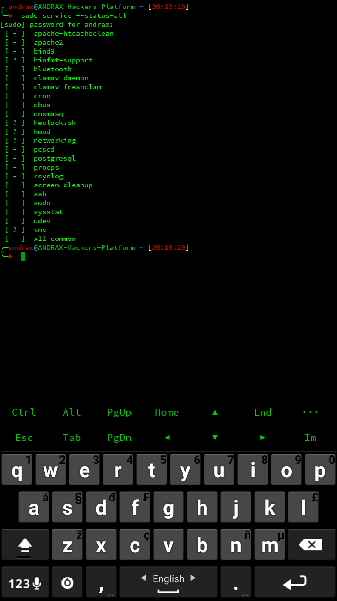

Services daemons
ANDRAX is completely equipped with services daemons to help you and improve your usability!
Container of ANDRAX never boot, the container is always in user space, but you can use init.d scripts in the same way that you do in a normal Linux distributions.
You can list ANDRAX available services using the command:
sudo service --status-all

Learn Ethical Hacking
If you want to become a professional, join our Advanced Ethical Hacking Training: JOIN NOW!